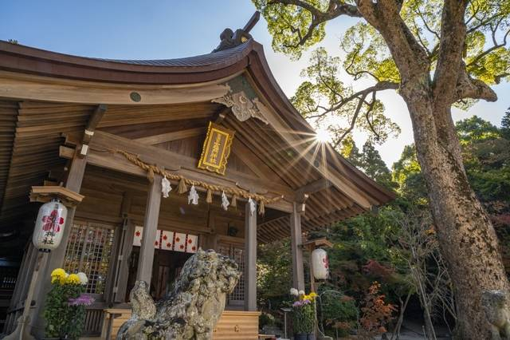

あなたが好きな山はこちら!
鬼滅の刃の原点：宝満山(福岡・太宰府)
「鬼滅の刃」で盛り上がったあの『竈門神社』の裏にある
神の山、宝満山ですが、階段が多く、初心者にはきついと思いますが、
山頂からは福岡を一覧できる山頂風景を見れます。
一度竈門炭治郎が体験した、山での暮らし、
朝から見る素敵なご来光を堪能できる山です。
縁結びにもご利益があると言われています。
MODEL COURSE
モデルコース
-
- 08:00
- 宝満山の登山口
竈門神社から一の鳥居までは案内に従い林道をショートカット、一の鳥居から本格的な登山道がはじまります。鬱蒼とした森の中を抜ける登山道のほとんどは、趣ある石段が続く道です。
-
- 11:00
- 宝満山山頂
九州で最も登山者が多いといわれている宝満山は、古の時代より神が降り立つ山として崇められてきました。
別名の「竈門山」とは、頂上付近に遺る竈門岩の伝承によるものと、
江戸時代の儒学者貝原益軒も「筑前国続風土記」にも記しているように、
山の姿がカマドの形に見え、常に雲霧が絶えず、
それがカマドで煮炊きをして煙が立ち上っているように見えることに由来していると言われています。 -
- 13:00
- 竈門神社
「宝満宮 竈門神社」の下宮にある本殿をお参りしたあとは、境内にある良縁スポットへ。
本殿の右手にある2つの岩は、「愛敬の岩(あいけいのいわ)」です。目を閉じて好きな人のことを思い浮かべながら、岩から岩までの間を歩いてたどり着けたら、恋が叶うと信じられています。 -
- 15:00
- 太宰府天満宮
学業の神様と言われる、菅原道真公を祀る全国12,000社の総本宮。903年この地で生涯を閉じた道真公を祀り、延喜19年(919)に社殿が建てられたのが始まりとされる。学業成就のお守りや、道真公を慕って飛んできたと言われる「飛梅」をモチーフにしたお札などが人気。園内の6,000本にも及ぶ梅の木は、1月下旬-3月上旬が見ごろ。
-
- 16:00
- スターバックス 太宰府天満宮表参道店
建築家 隈研吾氏により「自然素材による伝統と現代の融合」というコンセプトをもとに設計されました。 店舗の入口から店内にかけて、伝統的な木組み構造を用いた特徴あるデザインになっています。木のぬくもりとコーヒーの香りに包まれた贅沢な時間をお楽しみください。
初めて旅するに、ちょっと不安だなーと思うのであれば、
弊社の山岳部があなたを連れて行きます！